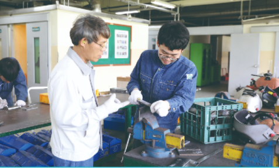

1. 학과 소개
4차 산업혁명시대에 살고 있는 우리는 기술의 발전과 변화에 적응하고 살아가기 위해서는 영원히 지속될 수 있는
나만의 기술을 가질 필요가 있다. 중요한 것은 현재와 같이 융합적이고 복합적인 사회에서 이러한 기술이 있는가
있다면 어느것이고 어떻게 선택하는가 일 것이다.
스마트설비과에서는 건물이 대형화하고 지하시설은 증가하고, 쾌적하고 안락을 추구하는 인간의 욕구에 따라 첨단의 빌딩과
구조물을 제작하고 제어하는 일을 담당한다.
다양해지는 인간의 편익에 대한 요구와 빨라져가는 기술의 변화에 대응하기
위하여 전문교과와 실습과정을 사회의 요구에 적합하도록 융통성있게 운영하며 산학협력을 통해 산업현장에 바로 적응할
수 있는 전문 기술인력을 양성한다.
2. 전공 과목
배관시공, 피복아크용접, 냉동공조설치, 가스텅스텐아크용접, 냉동공조일반, 산업설비, 기초제도, 전문제도, co2용접,
전기전자기초, 재료일반
3. 실습내용
건축물이나 플랜트 공장의 유체(물, 가스, 유류)와 열에너지를 수송하는 배관시공, 건물의 냉난방 및 공기청정 등의
공기조화장치의 설치 운영하는 냉동공조설치, 선박이나 자동차, 항공기, 철도차량의 제조 및 각종 플랜트 설비물을 설치하고
조립하는데 활용되는 각종용접(피복아크용접과 가스텅스텐아크용접,co2용접)을 실습한다.
4. 취득 자격증
가스기능사, 공조냉동기능사, 배관기능사, 에너지관리기능사, 온수온돌기능사, 전기용접기능사, 특수용접기능사
5. 출처
-
경기기계공업고등학교 홈페이지